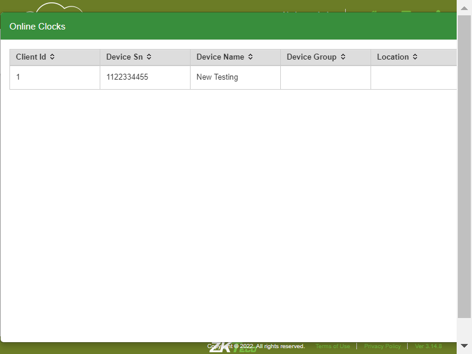
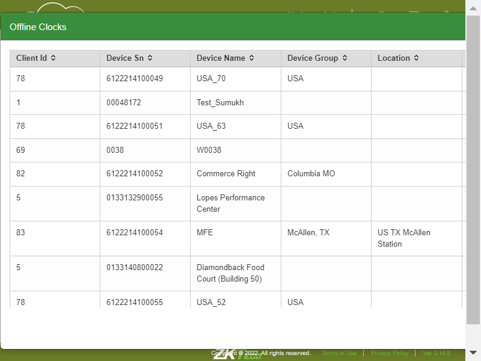
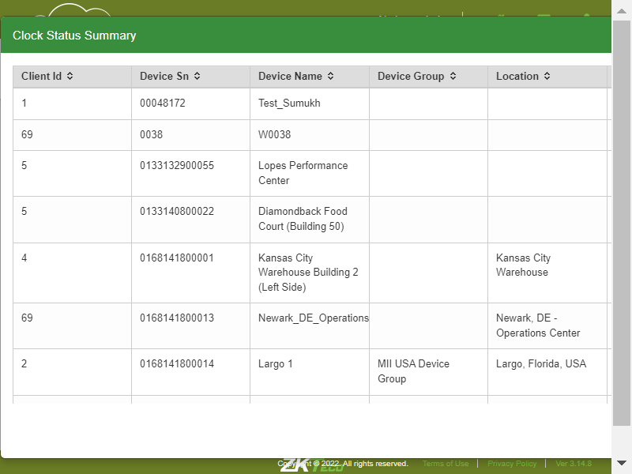
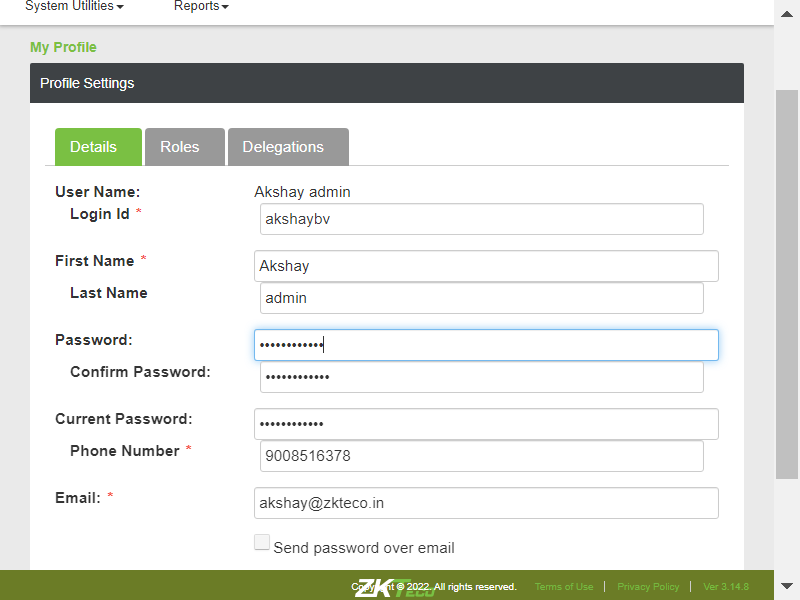
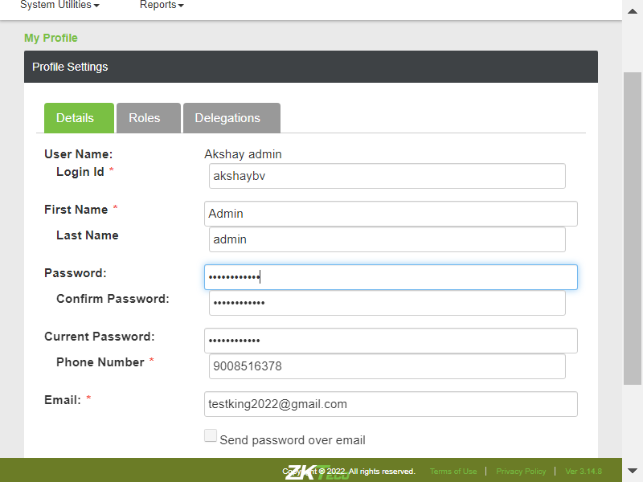
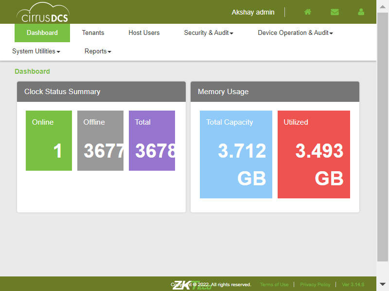

-
CirrusDCS
0h 4m 42s+6ms
14:36:31 PMCirrusDCS
03.31.2023 14:36:31 03.31.2023 14:41:13 0h 4m 42s+6ms@CirrusDCSI want to use this template for my feature fileVerify whether User is able to view the Dashboardcom.zkteco.cirrusdcs.stepDefinitions.CirrusDCS.i_initialize_drivers_for_DCS_automation()Driver InitializedGiven Login to the Host accountThen Click on the Dashboard moduleThen Verify the Dashbord moduleVerify whetherUser is able to access the Dashboardcom.zkteco.cirrusdcs.stepDefinitions.CirrusDCS.i_initialize_drivers_for_DCS_automation()Driver InitializedGiven Login to the Host accountThen Click on the Dashboard moduleThen access the DashboardVerify whether User is able to view all the items in the dashboardcom.zkteco.cirrusdcs.stepDefinitions.CirrusDCS.i_initialize_drivers_for_DCS_automation()Driver InitializedGiven Login to the Host accountThen Click on the Dashboard moduleThen verify all the itmsVerify whetherUser is able to view the all items in the Clock status summary tablecom.zkteco.cirrusdcs.stepDefinitions.CirrusDCS.i_initialize_drivers_for_DCS_automation()Driver InitializedGiven Login to the Host accountThen Click on the Dashboard moduleThen Verify all items in the Clock status summary tableVerify whether User is able to view the all items in the Memory usage tablecom.zkteco.cirrusdcs.stepDefinitions.CirrusDCS.i_initialize_drivers_for_DCS_automation()Driver InitializedGiven Login to the Host accountThen Click on the Dashboard moduleThen Verify all items in the Memory usage tableVerify whetherUser is able to view the online clocks countcom.zkteco.cirrusdcs.stepDefinitions.CirrusDCS.i_initialize_drivers_for_DCS_automation()Driver InitializedGiven Login to the Host accountThen Click on the Dashboard moduleThen Verify the online clocks countVerify whetherUser is able to view the offline clocks countcom.zkteco.cirrusdcs.stepDefinitions.CirrusDCS.i_initialize_drivers_for_DCS_automation()Driver InitializedGiven Login to the Host accountThen Click on the Dashboard moduleThen Verify the offline clocks countVerify whetherUser is able to view the Total capacity of the memory usage of clockscom.zkteco.cirrusdcs.stepDefinitions.CirrusDCS.i_initialize_drivers_for_DCS_automation()Driver InitializedGiven Login to the Host accountThen Click on the Dashboard moduleThen Verify Total capacity of the memory usage of clocksVerify whetherUser is able to view the utilized Memory usage of the clockscom.zkteco.cirrusdcs.stepDefinitions.CirrusDCS.i_initialize_drivers_for_DCS_automation()Driver InitializedGiven Login to the Host accountThen Click on the Dashboard moduleThen Verify the utilized Memory usage of the clocksVerify whetherUser is able to access the online clock count button, online clocks page is displayedcom.zkteco.cirrusdcs.stepDefinitions.CirrusDCS.i_initialize_drivers_for_DCS_automation()Driver InitializedGiven Login to the Host accountThen Click on the Dashboard moduleThen Verify the online clocks page is displayedVerify whetherUser is able to access the online clock count page all the table columns is displayedcom.zkteco.cirrusdcs.stepDefinitions.CirrusDCS.i_initialize_drivers_for_DCS_automation()Driver InitializedGiven Login to the Host accountThen Click on the Dashboard moduleThen Verify the online clocks page all the table columns is displayedcom.zkteco.cirrusdcs.stepDefinitions.CirrusDCS.teardown(io.cucumber.java.Scenario)whetherUser is able to access the offline clock count page all the table columns is displayedcom.zkteco.cirrusdcs.stepDefinitions.CirrusDCS.i_initialize_drivers_for_DCS_automation()Driver InitializedGiven Login to the Host accountThen Click on the Dashboard moduleThen Verify the Offline clocks page all the table columns is displayedcom.zkteco.cirrusdcs.stepDefinitions.CirrusDCS.teardown(io.cucumber.java.Scenario)whetherUser is able to access the Total clock count page all the table columns is displayedcom.zkteco.cirrusdcs.stepDefinitions.CirrusDCS.i_initialize_drivers_for_DCS_automation()Driver InitializedGiven Login to the Host accountThen Click on the Dashboard moduleThen Verify the Total clocks page all the table columns is displayedcom.zkteco.cirrusdcs.stepDefinitions.CirrusDCS.teardown(io.cucumber.java.Scenario)Verify whetherUser is able to view the online clock details in the online clock pagecom.zkteco.cirrusdcs.stepDefinitions.CirrusDCS.i_initialize_drivers_for_DCS_automation()Driver InitializedGiven Login to the Host accountThen Click on the Dashboard moduleThen Verify the online clock details in the online clock pageVerify whetherUser is able to view the offline clock details in the offline clock pagecom.zkteco.cirrusdcs.stepDefinitions.CirrusDCS.i_initialize_drivers_for_DCS_automation()Driver InitializedGiven Login to the Host accountThen Click on the Dashboard moduleThen Verify the Offline clock details in the Offline clock pageVerify whetherUser is able to view the Total clock details in the Total clock pagecom.zkteco.cirrusdcs.stepDefinitions.CirrusDCS.i_initialize_drivers_for_DCS_automation()Driver InitializedGiven Login to the Host accountThen Click on the Dashboard moduleThen Verify the Total clock details in the Total clock pageVerify whetherUser is able to access the home icon home page is displayedcom.zkteco.cirrusdcs.stepDefinitions.CirrusDCS.i_initialize_drivers_for_DCS_automation()Driver InitializedGiven Login to the Host accountThen Click on the Dashboard moduleThen Verify the home page is displayedVerify whetherUser is able to access the message icon Event messages page is displayedcom.zkteco.cirrusdcs.stepDefinitions.CirrusDCS.i_initialize_drivers_for_DCS_automation()Driver InitializedGiven Login to the Host accountThen click on the message iconThen Verify the Event messages page is displayedVerify whetherUser is able to access the profile icon all fields are displayedcom.zkteco.cirrusdcs.stepDefinitions.CirrusDCS.i_initialize_drivers_for_DCS_automation()Driver InitializedGiven Login to the Host accountThen click on the profile iconThen Verify the My profile and Logout fields are displayedVerify whetherUser able to access the My profile button profile setting page is displayedcom.zkteco.cirrusdcs.stepDefinitions.CirrusDCS.i_initialize_drivers_for_DCS_automation()Driver InitializedGiven Login to the Host accountThen click on the profile iconThen click on My Profile buttonThen verify the profile setting page is displayedVerify whetherUser is able to access the profile setting page all sub modules are displayedcom.zkteco.cirrusdcs.stepDefinitions.CirrusDCS.i_initialize_drivers_for_DCS_automation()Driver InitializedGiven Login to the Host accountThen click on the profile iconThen click on My Profile buttonThen verify the Details,Roles,and Delegacation modules are displayedVerify whetherUser is able to access the Details module all fields are displayedcom.zkteco.cirrusdcs.stepDefinitions.CirrusDCS.i_initialize_drivers_for_DCS_automation()Driver InitializedGiven Login to the Host accountThen click on the profile iconThen click on My Profile buttonThen click on Details moduleThen verify the all fields are displayedVerify whetherUser is able to access the Roles module all Role are displayedcom.zkteco.cirrusdcs.stepDefinitions.CirrusDCS.i_initialize_drivers_for_DCS_automation()Driver InitializedGiven Login to the Host accountThen click on the profile iconThen click on My Profile buttonThen click on Roles moduleThen verify the all Role are displayedVerify whetherUser is able to access the delegation module in the table all columns are displayedcom.zkteco.cirrusdcs.stepDefinitions.CirrusDCS.i_initialize_drivers_for_DCS_automation()Driver InitializedGiven Login to the Host accountThen click on the profile iconThen click on My Profile buttonThen click on delegation moduleThen verify the all columns are displayedVerify whether theUser is able to access the logout button Verify the host account is logoutcom.zkteco.cirrusdcs.stepDefinitions.CirrusDCS.i_initialize_drivers_for_DCS_automation()Driver InitializedGiven Login to the Host accountThen click on the profile iconThen click on the logout buttonThen verify the host account is logoutVerify whether the User is able to select the role in the roles modulecom.zkteco.cirrusdcs.stepDefinitions.CirrusDCS.i_initialize_drivers_for_DCS_automation()Driver InitializedGiven Login to the Host accountThen click on the profile iconThen click on My Profile buttonThen click on Roles moduleThen verify the User is able to select the role in the roles moduleVerify whether the User is able to select the client in the delegation modulecom.zkteco.cirrusdcs.stepDefinitions.CirrusDCS.i_initialize_drivers_for_DCS_automation()Driver InitializedGiven Login to the Host accountThen click on the profile iconThen click on My Profile buttonThen click on delegation moduleThen verify the User is able to select the client in the delegation moduleVerify whetherUser is able to modify the email addresscom.zkteco.cirrusdcs.stepDefinitions.CirrusDCS.i_initialize_drivers_for_DCS_automation()Driver InitializedGiven Login to the Host accountThen click on the profile iconThen click on My Profile buttonThen click on Details moduleThen modify the email addressThen Verify the modify the email addressStep skippedcom.zkteco.cirrusdcs.stepDefinitions.CirrusDCS.teardown(io.cucumber.java.Scenario)Verify whetherUser is able to modify the phone numbercom.zkteco.cirrusdcs.stepDefinitions.CirrusDCS.i_initialize_drivers_for_DCS_automation()Driver InitializedGiven Login to the Host accountThen click on the profile iconThen click on My Profile buttonThen click on Details moduleThen modify the phone numberThen Verify modify the phone numberStep skippedcom.zkteco.cirrusdcs.stepDefinitions.CirrusDCS.teardown(io.cucumber.java.Scenario)Verify whetherUser is able to modify the first namecom.zkteco.cirrusdcs.stepDefinitions.CirrusDCS.i_initialize_drivers_for_DCS_automation()Driver InitializedGiven Login to the Host accountThen click on the profile iconThen click on My Profile buttonThen click on Details moduleThen modify the first nameThen Verify modify the first nameStep skippedcom.zkteco.cirrusdcs.stepDefinitions.CirrusDCS.teardown(io.cucumber.java.Scenario)Verify whether theUser is able to modify the passwordcom.zkteco.cirrusdcs.stepDefinitions.CirrusDCS.i_initialize_drivers_for_DCS_automation()Driver InitializedGiven Login to the Host accountThen click on the profile iconThen click on My Profile buttonThen click on Details moduleThen modify the passwordThen Verify modify the passwordStep skippedcom.zkteco.cirrusdcs.stepDefinitions.CirrusDCS.teardown(io.cucumber.java.Scenario)Verify whether theUser is able to save all the datacom.zkteco.cirrusdcs.stepDefinitions.CirrusDCS.i_initialize_drivers_for_DCS_automation()Driver InitializedGiven Login to the Host accountThen click on the profile iconThen click on My Profile buttonThen click on Details moduleThen fill required dataThen Verify save all the dataStep skippedcom.zkteco.cirrusdcs.stepDefinitions.CirrusDCS.teardown(io.cucumber.java.Scenario)Verify whether the User is able to view the all items in the bottom of the pagecom.zkteco.cirrusdcs.stepDefinitions.CirrusDCS.i_initialize_drivers_for_DCS_automation()Driver InitializedGiven Login to the Host accountThen verify the all items in the bottom of the pagecom.zkteco.cirrusdcs.stepDefinitions.CirrusDCS.teardown(io.cucumber.java.Scenario)Verify whether theUser is access the Terms of use link the CirrusDCS Service Agreement is displayedcom.zkteco.cirrusdcs.stepDefinitions.CirrusDCS.i_initialize_drivers_for_DCS_automation()Driver InitializedGiven Login to the Host accountThen click on the Terms of use linkThen verify the CirrusDCS Service Agreement is displayedVerify whether theUser is access the privacy policy link the CirrusDCS Privacy Policy is displayedcom.zkteco.cirrusdcs.stepDefinitions.CirrusDCS.i_initialize_drivers_for_DCS_automation()Driver InitializedGiven Login to the Host accountThen click on the privacy policy linkThen verify the CirrusDCS Privacy Policy is displayedVerify whether theUser is able to navigate back to Respective Login page on click of back to login link incom.zkteco.cirrusdcs.stepDefinitions.CirrusDCS.i_initialize_drivers_for_DCS_automation()Driver InitializedGiven Login to the Host accountThen click on the privacy policy linkThen click on the back to login linkThen verify the back to login linkVerify whether theUser is able to navigate back to Respective Login page on click of back to login link incom.zkteco.cirrusdcs.stepDefinitions.CirrusDCS.i_initialize_drivers_for_DCS_automation()Driver InitializedGiven Login to the Host accountThen click on the terms of use buttonThen click on the back to login linkThen verify the back to login link
-
@CirrusDCS
38 tests
28 9@CirrusDCS
28 passed 9 failedStatus Timestamp TestName 14:36:31 PM CirrusDCS 14:36:31 PM Verify whether User is able to view the Dashboard CirrusDCS.Verify whether User is able to view the Dashboard14:36:39 PM Verify whetherUser is able to access the Dashboard CirrusDCS.Verify whetherUser is able to access the Dashboard14:36:45 PM Verify whether User is able to view all the items in the dashboard CirrusDCS.Verify whether User is able to view all the items in the dashboard14:36:51 PM Verify whetherUser is able to view the all items in the Clock status summary table CirrusDCS.Verify whetherUser is able to view the all items in the Clock status summary table14:36:58 PM Verify whether User is able to view the all items in the Memory usage table CirrusDCS.Verify whether User is able to view the all items in the Memory usage table14:37:03 PM Verify whetherUser is able to view the online clocks count CirrusDCS.Verify whetherUser is able to view the online clocks count14:37:10 PM Verify whetherUser is able to view the offline clocks count CirrusDCS.Verify whetherUser is able to view the offline clocks count14:37:21 PM Verify whetherUser is able to view the Total capacity of the memory usage of clocks CirrusDCS.Verify whetherUser is able to view the Total capacity of the memory usage of clocks14:37:27 PM Verify whetherUser is able to view the utilized Memory usage of the clocks CirrusDCS.Verify whetherUser is able to view the utilized Memory usage of the clocks14:37:32 PM Verify whetherUser is able to access the online clock count button, online clocks page is displayed CirrusDCS.Verify whetherUser is able to access the online clock count button, online clocks page is displayed14:37:39 PM Verify whetherUser is able to access the online clock count page all the table columns is displayed CirrusDCS.Verify whetherUser is able to access the online clock count page all the table columns is displayed14:37:50 PM whetherUser is able to access the offline clock count page all the table columns is displayed CirrusDCS.whetherUser is able to access the offline clock count page all the table columns is displayed14:38:07 PM whetherUser is able to access the Total clock count page all the table columns is displayed CirrusDCS.whetherUser is able to access the Total clock count page all the table columns is displayed14:38:18 PM Verify whetherUser is able to view the online clock details in the online clock page CirrusDCS.Verify whetherUser is able to view the online clock details in the online clock page14:38:23 PM Verify whetherUser is able to view the offline clock details in the offline clock page CirrusDCS.Verify whetherUser is able to view the offline clock details in the offline clock page14:38:40 PM Verify whetherUser is able to view the Total clock details in the Total clock page CirrusDCS.Verify whetherUser is able to view the Total clock details in the Total clock page14:38:51 PM Verify whetherUser is able to access the home icon home page is displayed CirrusDCS.Verify whetherUser is able to access the home icon home page is displayed14:38:56 PM Verify whetherUser is able to access the message icon Event messages page is displayed CirrusDCS.Verify whetherUser is able to access the message icon Event messages page is displayed14:39:04 PM Verify whetherUser is able to access the profile icon all fields are displayed CirrusDCS.Verify whetherUser is able to access the profile icon all fields are displayed14:39:10 PM Verify whetherUser able to access the My profile button profile setting page is displayed CirrusDCS.Verify whetherUser able to access the My profile button profile setting page is displayed14:39:14 PM Verify whetherUser is able to access the profile setting page all sub modules are displayed CirrusDCS.Verify whetherUser is able to access the profile setting page all sub modules are displayed14:39:19 PM Verify whetherUser is able to access the Details module all fields are displayed CirrusDCS.Verify whetherUser is able to access the Details module all fields are displayed14:39:24 PM Verify whetherUser is able to access the Roles module all Role are displayed CirrusDCS.Verify whetherUser is able to access the Roles module all Role are displayed14:39:28 PM Verify whetherUser is able to access the delegation module in the table all columns are displayed CirrusDCS.Verify whetherUser is able to access the delegation module in the table all columns are displayed14:39:33 PM Verify whether theUser is able to access the logout button Verify the host account is logout CirrusDCS.Verify whether theUser is able to access the logout button Verify the host account is logout14:39:37 PM Verify whether the User is able to select the role in the roles module CirrusDCS.Verify whether the User is able to select the role in the roles module14:39:43 PM Verify whether the User is able to select the client in the delegation module CirrusDCS.Verify whether the User is able to select the client in the delegation module14:39:48 PM Verify whetherUser is able to modify the email address CirrusDCS.Verify whetherUser is able to modify the email address14:39:55 PM Verify whetherUser is able to modify the phone number CirrusDCS.Verify whetherUser is able to modify the phone number14:40:02 PM Verify whetherUser is able to modify the first name CirrusDCS.Verify whetherUser is able to modify the first name14:40:10 PM Verify whether theUser is able to modify the password CirrusDCS.Verify whether theUser is able to modify the password14:40:17 PM Verify whether theUser is able to save all the data CirrusDCS.Verify whether theUser is able to save all the data14:40:23 PM Verify whether the User is able to view the all items in the bottom of the page CirrusDCS.Verify whether the User is able to view the all items in the bottom of the page14:40:57 PM Verify whether theUser is access the Terms of use link the CirrusDCS Service Agreement is displayed CirrusDCS.Verify whether theUser is access the Terms of use link the CirrusDCS Service Agreement is displayed14:41:01 PM Verify whether theUser is access the privacy policy link the CirrusDCS Privacy Policy is displayed CirrusDCS.Verify whether theUser is access the privacy policy link the CirrusDCS Privacy Policy is displayed14:41:05 PM Verify whether theUser is able to navigate back to Respective Login page on click of back to login link in CirrusDCS.Verify whether theUser is able to navigate back to Respective Login page on click of back to login link in14:41:09 PM Verify whether theUser is able to navigate back to Respective Login page on click of back to login link in CirrusDCS.Verify whether theUser is able to navigate back to Respective Login page on click of back to login link in -
@CirrusDCS_TC_01
1 tests
1@CirrusDCS_TC_01
1 passedStatus Timestamp TestName 14:36:31 PM Verify whether User is able to view the Dashboard CirrusDCS.Verify whether User is able to view the Dashboard -
@DCSFullsuite
37 tests
28 9@DCSFullsuite
28 passed 9 failedStatus Timestamp TestName 14:36:31 PM Verify whether User is able to view the Dashboard CirrusDCS.Verify whether User is able to view the Dashboard14:36:39 PM Verify whetherUser is able to access the Dashboard CirrusDCS.Verify whetherUser is able to access the Dashboard14:36:45 PM Verify whether User is able to view all the items in the dashboard CirrusDCS.Verify whether User is able to view all the items in the dashboard14:36:51 PM Verify whetherUser is able to view the all items in the Clock status summary table CirrusDCS.Verify whetherUser is able to view the all items in the Clock status summary table14:36:58 PM Verify whether User is able to view the all items in the Memory usage table CirrusDCS.Verify whether User is able to view the all items in the Memory usage table14:37:03 PM Verify whetherUser is able to view the online clocks count CirrusDCS.Verify whetherUser is able to view the online clocks count14:37:10 PM Verify whetherUser is able to view the offline clocks count CirrusDCS.Verify whetherUser is able to view the offline clocks count14:37:21 PM Verify whetherUser is able to view the Total capacity of the memory usage of clocks CirrusDCS.Verify whetherUser is able to view the Total capacity of the memory usage of clocks14:37:27 PM Verify whetherUser is able to view the utilized Memory usage of the clocks CirrusDCS.Verify whetherUser is able to view the utilized Memory usage of the clocks14:37:32 PM Verify whetherUser is able to access the online clock count button, online clocks page is displayed CirrusDCS.Verify whetherUser is able to access the online clock count button, online clocks page is displayed14:37:39 PM Verify whetherUser is able to access the online clock count page all the table columns is displayed CirrusDCS.Verify whetherUser is able to access the online clock count page all the table columns is displayed14:37:50 PM whetherUser is able to access the offline clock count page all the table columns is displayed CirrusDCS.whetherUser is able to access the offline clock count page all the table columns is displayed14:38:07 PM whetherUser is able to access the Total clock count page all the table columns is displayed CirrusDCS.whetherUser is able to access the Total clock count page all the table columns is displayed14:38:18 PM Verify whetherUser is able to view the online clock details in the online clock page CirrusDCS.Verify whetherUser is able to view the online clock details in the online clock page14:38:23 PM Verify whetherUser is able to view the offline clock details in the offline clock page CirrusDCS.Verify whetherUser is able to view the offline clock details in the offline clock page14:38:40 PM Verify whetherUser is able to view the Total clock details in the Total clock page CirrusDCS.Verify whetherUser is able to view the Total clock details in the Total clock page14:38:51 PM Verify whetherUser is able to access the home icon home page is displayed CirrusDCS.Verify whetherUser is able to access the home icon home page is displayed14:38:56 PM Verify whetherUser is able to access the message icon Event messages page is displayed CirrusDCS.Verify whetherUser is able to access the message icon Event messages page is displayed14:39:04 PM Verify whetherUser is able to access the profile icon all fields are displayed CirrusDCS.Verify whetherUser is able to access the profile icon all fields are displayed14:39:10 PM Verify whetherUser able to access the My profile button profile setting page is displayed CirrusDCS.Verify whetherUser able to access the My profile button profile setting page is displayed14:39:14 PM Verify whetherUser is able to access the profile setting page all sub modules are displayed CirrusDCS.Verify whetherUser is able to access the profile setting page all sub modules are displayed14:39:19 PM Verify whetherUser is able to access the Details module all fields are displayed CirrusDCS.Verify whetherUser is able to access the Details module all fields are displayed14:39:24 PM Verify whetherUser is able to access the Roles module all Role are displayed CirrusDCS.Verify whetherUser is able to access the Roles module all Role are displayed14:39:28 PM Verify whetherUser is able to access the delegation module in the table all columns are displayed CirrusDCS.Verify whetherUser is able to access the delegation module in the table all columns are displayed14:39:33 PM Verify whether theUser is able to access the logout button Verify the host account is logout CirrusDCS.Verify whether theUser is able to access the logout button Verify the host account is logout14:39:37 PM Verify whether the User is able to select the role in the roles module CirrusDCS.Verify whether the User is able to select the role in the roles module14:39:43 PM Verify whether the User is able to select the client in the delegation module CirrusDCS.Verify whether the User is able to select the client in the delegation module14:39:48 PM Verify whetherUser is able to modify the email address CirrusDCS.Verify whetherUser is able to modify the email address14:39:55 PM Verify whetherUser is able to modify the phone number CirrusDCS.Verify whetherUser is able to modify the phone number14:40:02 PM Verify whetherUser is able to modify the first name CirrusDCS.Verify whetherUser is able to modify the first name14:40:10 PM Verify whether theUser is able to modify the password CirrusDCS.Verify whether theUser is able to modify the password14:40:17 PM Verify whether theUser is able to save all the data CirrusDCS.Verify whether theUser is able to save all the data14:40:23 PM Verify whether the User is able to view the all items in the bottom of the page CirrusDCS.Verify whether the User is able to view the all items in the bottom of the page14:40:57 PM Verify whether theUser is access the Terms of use link the CirrusDCS Service Agreement is displayed CirrusDCS.Verify whether theUser is access the Terms of use link the CirrusDCS Service Agreement is displayed14:41:01 PM Verify whether theUser is access the privacy policy link the CirrusDCS Privacy Policy is displayed CirrusDCS.Verify whether theUser is access the privacy policy link the CirrusDCS Privacy Policy is displayed14:41:05 PM Verify whether theUser is able to navigate back to Respective Login page on click of back to login link in CirrusDCS.Verify whether theUser is able to navigate back to Respective Login page on click of back to login link in14:41:09 PM Verify whether theUser is able to navigate back to Respective Login page on click of back to login link in CirrusDCS.Verify whether theUser is able to navigate back to Respective Login page on click of back to login link in -
@HostDashboard
37 tests
28 9@HostDashboard
28 passed 9 failedStatus Timestamp TestName 14:36:31 PM Verify whether User is able to view the Dashboard CirrusDCS.Verify whether User is able to view the Dashboard14:36:39 PM Verify whetherUser is able to access the Dashboard CirrusDCS.Verify whetherUser is able to access the Dashboard14:36:45 PM Verify whether User is able to view all the items in the dashboard CirrusDCS.Verify whether User is able to view all the items in the dashboard14:36:51 PM Verify whetherUser is able to view the all items in the Clock status summary table CirrusDCS.Verify whetherUser is able to view the all items in the Clock status summary table14:36:58 PM Verify whether User is able to view the all items in the Memory usage table CirrusDCS.Verify whether User is able to view the all items in the Memory usage table14:37:03 PM Verify whetherUser is able to view the online clocks count CirrusDCS.Verify whetherUser is able to view the online clocks count14:37:10 PM Verify whetherUser is able to view the offline clocks count CirrusDCS.Verify whetherUser is able to view the offline clocks count14:37:21 PM Verify whetherUser is able to view the Total capacity of the memory usage of clocks CirrusDCS.Verify whetherUser is able to view the Total capacity of the memory usage of clocks14:37:27 PM Verify whetherUser is able to view the utilized Memory usage of the clocks CirrusDCS.Verify whetherUser is able to view the utilized Memory usage of the clocks14:37:32 PM Verify whetherUser is able to access the online clock count button, online clocks page is displayed CirrusDCS.Verify whetherUser is able to access the online clock count button, online clocks page is displayed14:37:39 PM Verify whetherUser is able to access the online clock count page all the table columns is displayed CirrusDCS.Verify whetherUser is able to access the online clock count page all the table columns is displayed14:37:50 PM whetherUser is able to access the offline clock count page all the table columns is displayed CirrusDCS.whetherUser is able to access the offline clock count page all the table columns is displayed14:38:07 PM whetherUser is able to access the Total clock count page all the table columns is displayed CirrusDCS.whetherUser is able to access the Total clock count page all the table columns is displayed14:38:18 PM Verify whetherUser is able to view the online clock details in the online clock page CirrusDCS.Verify whetherUser is able to view the online clock details in the online clock page14:38:23 PM Verify whetherUser is able to view the offline clock details in the offline clock page CirrusDCS.Verify whetherUser is able to view the offline clock details in the offline clock page14:38:40 PM Verify whetherUser is able to view the Total clock details in the Total clock page CirrusDCS.Verify whetherUser is able to view the Total clock details in the Total clock page14:38:51 PM Verify whetherUser is able to access the home icon home page is displayed CirrusDCS.Verify whetherUser is able to access the home icon home page is displayed14:38:56 PM Verify whetherUser is able to access the message icon Event messages page is displayed CirrusDCS.Verify whetherUser is able to access the message icon Event messages page is displayed14:39:04 PM Verify whetherUser is able to access the profile icon all fields are displayed CirrusDCS.Verify whetherUser is able to access the profile icon all fields are displayed14:39:10 PM Verify whetherUser able to access the My profile button profile setting page is displayed CirrusDCS.Verify whetherUser able to access the My profile button profile setting page is displayed14:39:14 PM Verify whetherUser is able to access the profile setting page all sub modules are displayed CirrusDCS.Verify whetherUser is able to access the profile setting page all sub modules are displayed14:39:19 PM Verify whetherUser is able to access the Details module all fields are displayed CirrusDCS.Verify whetherUser is able to access the Details module all fields are displayed14:39:24 PM Verify whetherUser is able to access the Roles module all Role are displayed CirrusDCS.Verify whetherUser is able to access the Roles module all Role are displayed14:39:28 PM Verify whetherUser is able to access the delegation module in the table all columns are displayed CirrusDCS.Verify whetherUser is able to access the delegation module in the table all columns are displayed14:39:33 PM Verify whether theUser is able to access the logout button Verify the host account is logout CirrusDCS.Verify whether theUser is able to access the logout button Verify the host account is logout14:39:37 PM Verify whether the User is able to select the role in the roles module CirrusDCS.Verify whether the User is able to select the role in the roles module14:39:43 PM Verify whether the User is able to select the client in the delegation module CirrusDCS.Verify whether the User is able to select the client in the delegation module14:39:48 PM Verify whetherUser is able to modify the email address CirrusDCS.Verify whetherUser is able to modify the email address14:39:55 PM Verify whetherUser is able to modify the phone number CirrusDCS.Verify whetherUser is able to modify the phone number14:40:02 PM Verify whetherUser is able to modify the first name CirrusDCS.Verify whetherUser is able to modify the first name14:40:10 PM Verify whether theUser is able to modify the password CirrusDCS.Verify whether theUser is able to modify the password14:40:17 PM Verify whether theUser is able to save all the data CirrusDCS.Verify whether theUser is able to save all the data14:40:23 PM Verify whether the User is able to view the all items in the bottom of the page CirrusDCS.Verify whether the User is able to view the all items in the bottom of the page14:40:57 PM Verify whether theUser is access the Terms of use link the CirrusDCS Service Agreement is displayed CirrusDCS.Verify whether theUser is access the Terms of use link the CirrusDCS Service Agreement is displayed14:41:01 PM Verify whether theUser is access the privacy policy link the CirrusDCS Privacy Policy is displayed CirrusDCS.Verify whether theUser is access the privacy policy link the CirrusDCS Privacy Policy is displayed14:41:05 PM Verify whether theUser is able to navigate back to Respective Login page on click of back to login link in CirrusDCS.Verify whether theUser is able to navigate back to Respective Login page on click of back to login link in14:41:09 PM Verify whether theUser is able to navigate back to Respective Login page on click of back to login link in CirrusDCS.Verify whether theUser is able to navigate back to Respective Login page on click of back to login link in -
@CirrusDCS_TC_02
1 tests
1@CirrusDCS_TC_02
1 passedStatus Timestamp TestName 14:36:39 PM Verify whetherUser is able to access the Dashboard CirrusDCS.Verify whetherUser is able to access the Dashboard -
@CirrusDCS_TC_03
1 tests
1@CirrusDCS_TC_03
1 passedStatus Timestamp TestName 14:36:45 PM Verify whether User is able to view all the items in the dashboard CirrusDCS.Verify whether User is able to view all the items in the dashboard -
@CirrusDCS_TC_04
1 tests
1@CirrusDCS_TC_04
1 passedStatus Timestamp TestName 14:36:51 PM Verify whetherUser is able to view the all items in the Clock status summary table CirrusDCS.Verify whetherUser is able to view the all items in the Clock status summary table -
@CirrusDCS_TC_05
1 tests
1@CirrusDCS_TC_05
1 passedStatus Timestamp TestName 14:36:58 PM Verify whether User is able to view the all items in the Memory usage table CirrusDCS.Verify whether User is able to view the all items in the Memory usage table -
@CirrusDCS_TC_06
1 tests
1@CirrusDCS_TC_06
1 passedStatus Timestamp TestName 14:37:03 PM Verify whetherUser is able to view the online clocks count CirrusDCS.Verify whetherUser is able to view the online clocks count -
@CirrusDCS_TC_07
1 tests
1@CirrusDCS_TC_07
1 passedStatus Timestamp TestName 14:37:10 PM Verify whetherUser is able to view the offline clocks count CirrusDCS.Verify whetherUser is able to view the offline clocks count -
@CirrusDCS_TC_08
1 tests
1@CirrusDCS_TC_08
1 passedStatus Timestamp TestName 14:37:21 PM Verify whetherUser is able to view the Total capacity of the memory usage of clocks CirrusDCS.Verify whetherUser is able to view the Total capacity of the memory usage of clocks -
@CirrusDCS_TC_09
1 tests
1@CirrusDCS_TC_09
1 passedStatus Timestamp TestName 14:37:27 PM Verify whetherUser is able to view the utilized Memory usage of the clocks CirrusDCS.Verify whetherUser is able to view the utilized Memory usage of the clocks -
@CirrusDCS_TC_10
1 tests
1@CirrusDCS_TC_10
1 passedStatus Timestamp TestName 14:37:32 PM Verify whetherUser is able to access the online clock count button, online clocks page is displayed CirrusDCS.Verify whetherUser is able to access the online clock count button, online clocks page is displayed -
@CirrusDCS_TC_11
1 tests
1@CirrusDCS_TC_11
1 failedStatus Timestamp TestName 14:37:39 PM Verify whetherUser is able to access the online clock count page all the table columns is displayed CirrusDCS.Verify whetherUser is able to access the online clock count page all the table columns is displayed -
@CirrusDCS_TC_12
1 tests
1@CirrusDCS_TC_12
1 failedStatus Timestamp TestName 14:37:50 PM whetherUser is able to access the offline clock count page all the table columns is displayed CirrusDCS.whetherUser is able to access the offline clock count page all the table columns is displayed -
@CirrusDCS_TC_13
1 tests
1@CirrusDCS_TC_13
1 failedStatus Timestamp TestName 14:38:07 PM whetherUser is able to access the Total clock count page all the table columns is displayed CirrusDCS.whetherUser is able to access the Total clock count page all the table columns is displayed -
@CirrusDCS_TC_14
1 tests
1@CirrusDCS_TC_14
1 passedStatus Timestamp TestName 14:38:18 PM Verify whetherUser is able to view the online clock details in the online clock page CirrusDCS.Verify whetherUser is able to view the online clock details in the online clock page -
@CirrusDCS_TC_15
1 tests
1@CirrusDCS_TC_15
1 passedStatus Timestamp TestName 14:38:23 PM Verify whetherUser is able to view the offline clock details in the offline clock page CirrusDCS.Verify whetherUser is able to view the offline clock details in the offline clock page -
@CirrusDCS_TC_16
1 tests
1@CirrusDCS_TC_16
1 passedStatus Timestamp TestName 14:38:40 PM Verify whetherUser is able to view the Total clock details in the Total clock page CirrusDCS.Verify whetherUser is able to view the Total clock details in the Total clock page -
@CirrusDCS_TC_17
1 tests
1@CirrusDCS_TC_17
1 passedStatus Timestamp TestName 14:38:51 PM Verify whetherUser is able to access the home icon home page is displayed CirrusDCS.Verify whetherUser is able to access the home icon home page is displayed -
@CirrusDCS_TC_18
1 tests
1@CirrusDCS_TC_18
1 passedStatus Timestamp TestName 14:38:56 PM Verify whetherUser is able to access the message icon Event messages page is displayed CirrusDCS.Verify whetherUser is able to access the message icon Event messages page is displayed -
@CirrusDCS_TC_19
1 tests
1@CirrusDCS_TC_19
1 passedStatus Timestamp TestName 14:39:04 PM Verify whetherUser is able to access the profile icon all fields are displayed CirrusDCS.Verify whetherUser is able to access the profile icon all fields are displayed -
@CirrusDCS_TC_20
1 tests
1@CirrusDCS_TC_20
1 passedStatus Timestamp TestName 14:39:10 PM Verify whetherUser able to access the My profile button profile setting page is displayed CirrusDCS.Verify whetherUser able to access the My profile button profile setting page is displayed -
@CirrusDCS_TC_21
1 tests
1@CirrusDCS_TC_21
1 passedStatus Timestamp TestName 14:39:14 PM Verify whetherUser is able to access the profile setting page all sub modules are displayed CirrusDCS.Verify whetherUser is able to access the profile setting page all sub modules are displayed -
@CirrusDCS_TC_22
1 tests
1@CirrusDCS_TC_22
1 passedStatus Timestamp TestName 14:39:19 PM Verify whetherUser is able to access the Details module all fields are displayed CirrusDCS.Verify whetherUser is able to access the Details module all fields are displayed -
@CirrusDCS_TC_23
1 tests
1@CirrusDCS_TC_23
1 passedStatus Timestamp TestName 14:39:24 PM Verify whetherUser is able to access the Roles module all Role are displayed CirrusDCS.Verify whetherUser is able to access the Roles module all Role are displayed -
@CirrusDCS_TC_24
1 tests
1@CirrusDCS_TC_24
1 passedStatus Timestamp TestName 14:39:28 PM Verify whetherUser is able to access the delegation module in the table all columns are displayed CirrusDCS.Verify whetherUser is able to access the delegation module in the table all columns are displayed -
@CirrusDCS_TC_26
1 tests
1@CirrusDCS_TC_26
1 passedStatus Timestamp TestName 14:39:33 PM Verify whether theUser is able to access the logout button Verify the host account is logout CirrusDCS.Verify whether theUser is able to access the logout button Verify the host account is logout -
@CirrusDCS_TC_27
1 tests
1@CirrusDCS_TC_27
1 passedStatus Timestamp TestName 14:39:37 PM Verify whether the User is able to select the role in the roles module CirrusDCS.Verify whether the User is able to select the role in the roles module -
@CirrusDCS_TC_28
1 tests
1@CirrusDCS_TC_28
1 passedStatus Timestamp TestName 14:39:43 PM Verify whether the User is able to select the client in the delegation module CirrusDCS.Verify whether the User is able to select the client in the delegation module -
@CirrusDCS_TC_29
1 tests
1@CirrusDCS_TC_29
1 failedStatus Timestamp TestName 14:39:48 PM Verify whetherUser is able to modify the email address CirrusDCS.Verify whetherUser is able to modify the email address -
@CirrusDCS_TC_30
1 tests
1@CirrusDCS_TC_30
1 failedStatus Timestamp TestName 14:39:55 PM Verify whetherUser is able to modify the phone number CirrusDCS.Verify whetherUser is able to modify the phone number -
@CirrusDCS_TC_31
1 tests
1@CirrusDCS_TC_31
1 failedStatus Timestamp TestName 14:40:02 PM Verify whetherUser is able to modify the first name CirrusDCS.Verify whetherUser is able to modify the first name -
@CirrusDCS_TC_32
1 tests
1@CirrusDCS_TC_32
1 failedStatus Timestamp TestName 14:40:10 PM Verify whether theUser is able to modify the password CirrusDCS.Verify whether theUser is able to modify the password -
@CirrusDCS_TC_33
1 tests
1@CirrusDCS_TC_33
1 failedStatus Timestamp TestName 14:40:17 PM Verify whether theUser is able to save all the data CirrusDCS.Verify whether theUser is able to save all the data -
@CirrusDCS_TC_35
1 tests
1@CirrusDCS_TC_35
1 failedStatus Timestamp TestName 14:40:23 PM Verify whether the User is able to view the all items in the bottom of the page CirrusDCS.Verify whether the User is able to view the all items in the bottom of the page -
@CirrusDCS_TC_36
1 tests
1@CirrusDCS_TC_36
1 passedStatus Timestamp TestName 14:40:57 PM Verify whether theUser is access the Terms of use link the CirrusDCS Service Agreement is displayed CirrusDCS.Verify whether theUser is access the Terms of use link the CirrusDCS Service Agreement is displayed -
@CirrusDCS_TC_37
1 tests
1@CirrusDCS_TC_37
1 passedStatus Timestamp TestName 14:41:01 PM Verify whether theUser is access the privacy policy link the CirrusDCS Privacy Policy is displayed CirrusDCS.Verify whether theUser is access the privacy policy link the CirrusDCS Privacy Policy is displayed -
@CirrusDCS_TC_38
1 tests
1@CirrusDCS_TC_38
1 passedStatus Timestamp TestName 14:41:05 PM Verify whether theUser is able to navigate back to Respective Login page on click of back to login link in CirrusDCS.Verify whether theUser is able to navigate back to Respective Login page on click of back to login link in -
@CirrusDCS_TC_39
1 tests
1@CirrusDCS_TC_39
1 passedStatus Timestamp TestName 14:41:09 PM Verify whether theUser is able to navigate back to Respective Login page on click of back to login link in CirrusDCS.Verify whether theUser is able to navigate back to Respective Login page on click of back to login link in
-
org.junit.ComparisonFailure
3 tests
org.junit.ComparisonFailure
Status Timestamp TestName 14:37:49 PM Then Verify the online clocks page all the table columns is displayed Verify whetherUser is able to access the online clock count page all the table columns is displayed14:37:54 PM Then Verify the Offline clocks page all the table columns is displayed whetherUser is able to access the offline clock count page all the table columns is displayed14:38:10 PM Then Verify the Total clocks page all the table columns is displayed whetherUser is able to access the Total clock count page all the table columns is displayed -
org.openqa.selenium.ElementClickInterceptedException
5 tests
org.openqa.selenium.ElementClickInterceptedException
Status Timestamp TestName 14:39:51 PM Then modify the email address Verify whetherUser is able to modify the email address14:39:59 PM Then modify the phone number Verify whetherUser is able to modify the phone number14:40:06 PM Then modify the first name Verify whetherUser is able to modify the first name14:40:13 PM Then modify the password Verify whether theUser is able to modify the password14:40:21 PM Then fill required data Verify whether theUser is able to save all the data -
org.openqa.selenium.NoSuchElementException
1 tests
org.openqa.selenium.NoSuchElementException
Status Timestamp TestName 14:40:27 PM Then verify the all items in the bottom of the page Verify whether the User is able to view the all items in the bottom of the page
Features
Scenarios
Steps
Features
1
.00%Scenarios
37
75.68%Start
Mar 31, 2023 02:36:30 PM
Duration
0h 4m 43s+634ms
Timeline
Tags
| Name | Passed | Failed | Skipped | Others | Passed % |
|---|---|---|---|---|---|
| @CirrusDCS | 28 | 9 | 0 | 0 | 73.684% |
| @CirrusDCS_TC_01 | 1 | 0 | 0 | 0 | 100% |
| @DCSFullsuite | 28 | 9 | 0 | 0 | 75.676% |
| @HostDashboard | 28 | 9 | 0 | 0 | 75.676% |
| @CirrusDCS_TC_02 | 1 | 0 | 0 | 0 | 100% |
| @CirrusDCS_TC_03 | 1 | 0 | 0 | 0 | 100% |
| @CirrusDCS_TC_04 | 1 | 0 | 0 | 0 | 100% |
| @CirrusDCS_TC_05 | 1 | 0 | 0 | 0 | 100% |
| @CirrusDCS_TC_06 | 1 | 0 | 0 | 0 | 100% |
| @CirrusDCS_TC_07 | 1 | 0 | 0 | 0 | 100% |
| @CirrusDCS_TC_08 | 1 | 0 | 0 | 0 | 100% |
| @CirrusDCS_TC_09 | 1 | 0 | 0 | 0 | 100% |
| @CirrusDCS_TC_10 | 1 | 0 | 0 | 0 | 100% |
| @CirrusDCS_TC_11 | 0 | 1 | 0 | 0 | 0% |
| @CirrusDCS_TC_12 | 0 | 1 | 0 | 0 | 0% |
| @CirrusDCS_TC_13 | 0 | 1 | 0 | 0 | 0% |
| @CirrusDCS_TC_14 | 1 | 0 | 0 | 0 | 100% |
| @CirrusDCS_TC_15 | 1 | 0 | 0 | 0 | 100% |
| @CirrusDCS_TC_16 | 1 | 0 | 0 | 0 | 100% |
| @CirrusDCS_TC_17 | 1 | 0 | 0 | 0 | 100% |
| @CirrusDCS_TC_18 | 1 | 0 | 0 | 0 | 100% |
| @CirrusDCS_TC_19 | 1 | 0 | 0 | 0 | 100% |
| @CirrusDCS_TC_20 | 1 | 0 | 0 | 0 | 100% |
| @CirrusDCS_TC_21 | 1 | 0 | 0 | 0 | 100% |
| @CirrusDCS_TC_22 | 1 | 0 | 0 | 0 | 100% |
| @CirrusDCS_TC_23 | 1 | 0 | 0 | 0 | 100% |
| @CirrusDCS_TC_24 | 1 | 0 | 0 | 0 | 100% |
| @CirrusDCS_TC_26 | 1 | 0 | 0 | 0 | 100% |
| @CirrusDCS_TC_27 | 1 | 0 | 0 | 0 | 100% |
| @CirrusDCS_TC_28 | 1 | 0 | 0 | 0 | 100% |
| @CirrusDCS_TC_29 | 0 | 1 | 0 | 0 | 0% |
| @CirrusDCS_TC_30 | 0 | 1 | 0 | 0 | 0% |
| @CirrusDCS_TC_31 | 0 | 1 | 0 | 0 | 0% |
| @CirrusDCS_TC_32 | 0 | 1 | 0 | 0 | 0% |
| @CirrusDCS_TC_33 | 0 | 1 | 0 | 0 | 0% |
| @CirrusDCS_TC_35 | 0 | 1 | 0 | 0 | 0% |
| @CirrusDCS_TC_36 | 1 | 0 | 0 | 0 | 100% |
| @CirrusDCS_TC_37 | 1 | 0 | 0 | 0 | 100% |
| @CirrusDCS_TC_38 | 1 | 0 | 0 | 0 | 100% |
| @CirrusDCS_TC_39 | 1 | 0 | 0 | 0 | 100% |